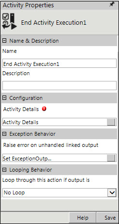

No
Activity Description
This activity enables the user to end or terminate the execution of an activity in a workflow. The user can end an activity present either in the same (parent) workflow or the child workflow which is associated to the parent workflow.
Application Scenario
Consider a workflow with a 'Wait For Event' activity and an 'Approval' activity. The Wait For Event activity is executed only when a new list item is added, otherwise the activity will be in a waiting state. This scenario, however, requires that if the user executes the approval activity, the workflow need not wait for the execution of the Wait For Event activity and hence end the activity. In such scenarios, the End Activity Execution activity can be used. This activity helps the user to ensure that a workflow completes without any activity in waiting state.
Refer to the User Scenarios given in the User Guide for a detailed understanding of this activity.
Activity Properties
The End Activity Execution activity has to be configured by specifying appropriate values for different properties in the Activity Properties pane. This pane can be accessed by clicking on the Activity Properties tool in the Tool Bar or by selecting the Activity Properties option from the context menu of End Activity Execution activity. The Activity Properties are organized under the following groups of related properties. The properties under each group are described in this topic.

Name & Description
The properties in the Name & Description group have been described below. You can use these properties to specify the name and description for the activity.
Name - This property is to be used to specify a name for the activity.
Property Type: Mandatory (This property must be set.)
Description - This property can be used to specify a brief description to be displayed for the activity.
Property Type: Optional (This property needs to be set only if necessary.)
Configuration
The properties in this group have been described below. You can use these properties to configure the functionality of the activity.
Activity Details - This property is used to specify the activity that is to ended and the workflow in which the activity is used.
Property Type: Mandatory (This property must be set to end the activity in a workflow.)
See End Activity Execution: Activity Details for a more detailed understanding of its properties.
Exception Behavior
Each activity has the Raise Error on Unhandled Linked Output property on click of which, it shows all the default configured mapped error outputs in red with their check boxes selected.
See Mapped Error Outputs for more details.
Looping Behavior
The property in the Looping Behavior group has been described below. You can use this property to specify the looping behavior of the activity.
Loop through this action if output is - This property is used to specify the condition for looping the activity by selecting an activity output from the drop-down field.
Property Type: Optional (This property needs to be set only if necessary.)